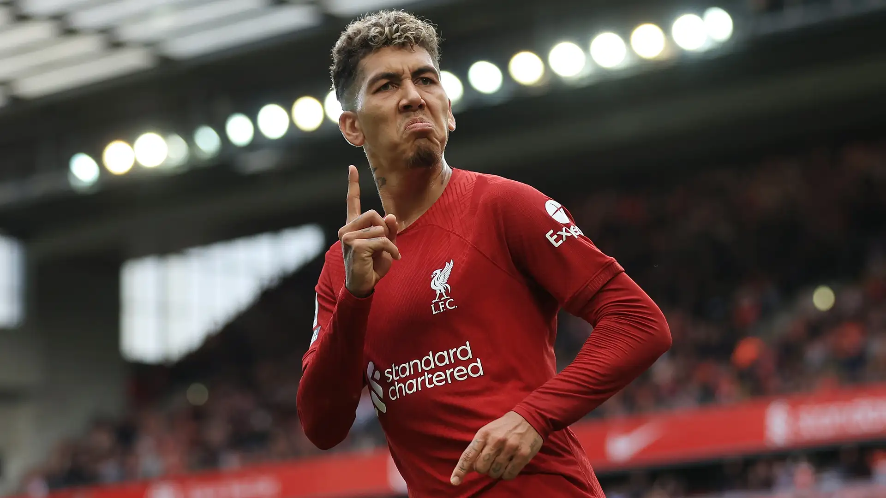

Roberto Firmino is famous for being a creative, hardworking Brazilian forward, especially as a key part of Liverpool's successful attack alongside Mohamed Salah and Sadio Mané.
Nickname: "Bobby," a short version of Roberto, given by fans and teammates. Religion: A Christian, he was baptized by teammate Alisson in 2020 and became an evangelical pastor in 2024. Languages: Speaks Portuguese, English, and German. Family: Married to Larissa Pereira, they have three daughters and welcomed a fourth child in 2022. Skills: Known for his clever movement, link-up play, tackling, and indirect set-piece ability.
